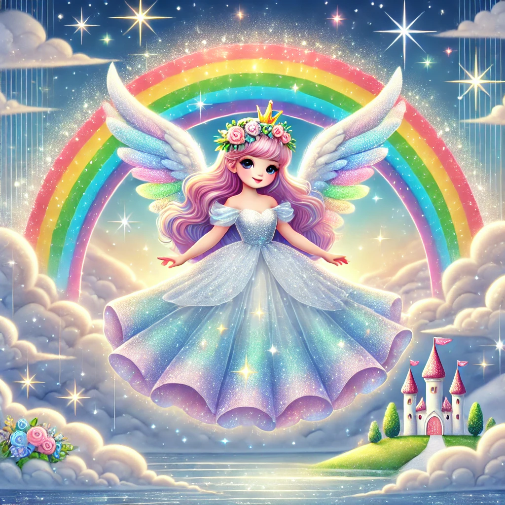

La Princesa de los Arcoiris

Había una vez, en un reino más allá de las nubes, una hermosa princesa llamada Estela. Estela no era una princesa común y corriente; ella vivía en el cielo, en un castillo construido de nubes brillantes y estrellas resplandecientes. Su tarea era muy especial: cada vez que llovía y el sol salía, Estela salía de su castillo y creaba los arcoiris más hermosos para iluminar el mundo.
Estela tenía un vestido hecho de luz de luna y sus alas, suaves como la seda, brillaban con todos los colores del arcoiris. Cuando volaba por el cielo, dejaba un rastro de colores que llenaba de alegría a todos los que lo veían. A pesar de vivir tan alto, Estela siempre observaba el mundo con amor y quería asegurarse de que todos pudieran disfrutar de la belleza de su trabajo.
Un día, Estela notó que el cielo estaba más gris y triste de lo normal. Aunque había lluvias, no aparecían los arcoiris. Decidió investigar qué estaba pasando. Volando más allá de su castillo, llegó al Reino de las Nubes Oscuras, un lugar donde las nubes eran tan densas que apenas dejaban pasar la luz.
En el centro del reino, encontró a la Reina Nubia, una nube anciana que había perdido su brillo y ya no podía mantener las nubes ligeras y felices. Estela, con su corazón generoso, decidió ayudar. Usando su magia, Estela convocó a todas las estrellas del cielo y les pidió que iluminaran el Reino de las Nubes Oscuras.
Las estrellas, brillando con todo su esplendor, comenzaron a dispersar la oscuridad. Poco a poco, las nubes se volvieron más ligeras y dejaron pasar la luz del sol. Con su magia y bondad, Estela logró que las nubes volvieran a ser felices y brillantes.
De regreso a su castillo, Estela vio cómo el cielo volvía a llenarse de colores. Los arcoiris aparecieron de nuevo, más hermosos que nunca. La gente en la tierra miraba al cielo con asombro y alegría, agradecida por la belleza que Estela les había devuelto.
Desde entonces, Estela continuó cuidando el cielo, asegurándose de que siempre hubiera luz y color para todos. Y cada vez que aparecía un arcoiris, la gente sabía que era un regalo de la princesa que vivía en el cielo.
Y colorín colorado, este cuento se ha acabado. Buenas noches, Alondra. ¡Dulces sueños!